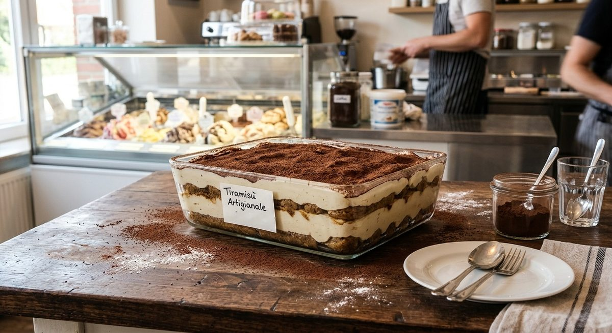
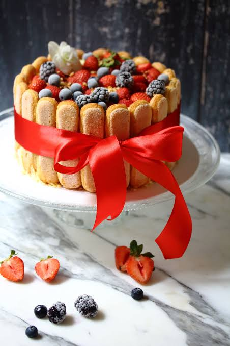
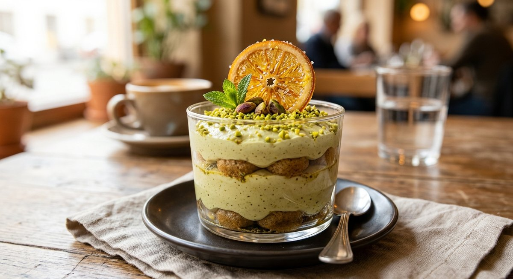
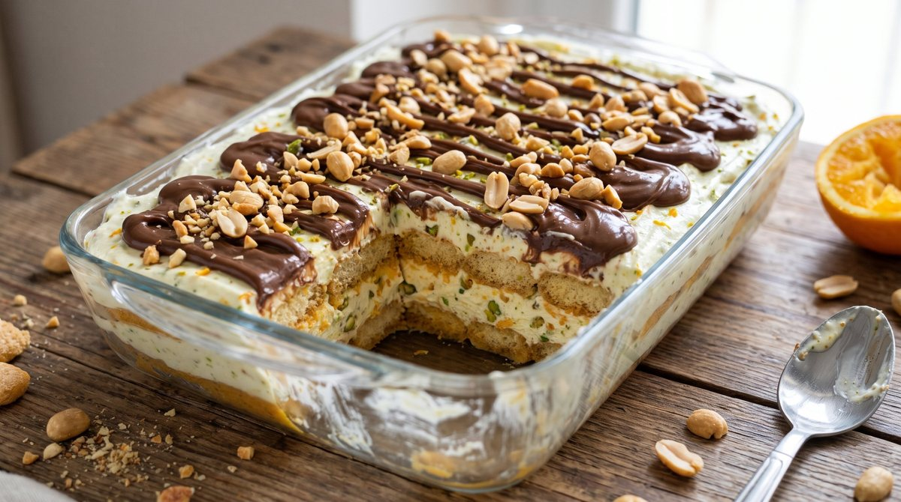
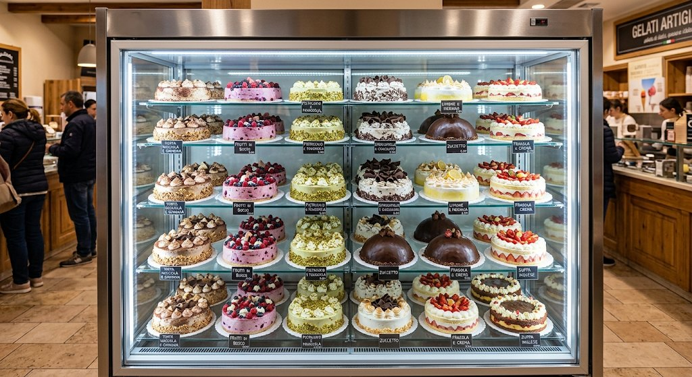

Dolci gelato: tiramisù e torte
Accanto al gelato in vetrina si possono proporre dolci da servire o da portare a casa: il tiramisù e le torte gelato.
Tiramisù artigianale
🌾 Contiene glutine — savoiardi (frumento). Per una versione senza glutine servono savoiardi senza glutine e nessun contatto con ingredienti con glutine.
Savoiardi inzuppati nel caffè, crema al mascarpone vellutata e una generosa spolverata di cacao amaro in superficie. Si prepara in due formati.
Monoporzione (per 1 persona)
Una pratica e raffinata vaschetta trasparente individuale, perfetta per gustare tutti gli strati cremosi del tiramisù artigianale. Vedi anche la pagina Monoporzioni.
Formato famiglia (per 4 persone)
Una vaschetta rettangolare più ampia, ideale per quattro porzioni, che mantiene intatta la stratificazione perfetta del dolce e si presta benissimo a essere portata a tavola per un'occasione conviviale.

Latte, glutine e, a seconda della ricetta, uova sono allergeni da controllare ingrediente per ingrediente e da indicare al cliente: vedi la pagina Gusti e allergeni.
Tiramisù al caramello salato con salsa di frutti di bosco
🌾 Contiene glutine — savoiardi (frumento).
Il caramello salato dà una dolcezza avvolgente, bilanciata dall'acidità fresca dei frutti di bosco. Ingredienti per una teglia da 6-8 porzioni.

Crema al mascarpone e caramello
- Mascarpone: 500 g
- Uova: 4 tuorli (freschissimi, montati, oppure pastorizzati)
- Zucchero: 100 g
- Caramello salato: 120 g (un po' nella crema, il resto per la decorazione a strati)
Bagna e salsa ai frutti di bosco
- Frutti di bosco, freschi o surgelati: 300 g
- Zucchero a velo: 30 g
- Succo di limone: qualche goccia
- Acqua o sciroppo leggero: q.b. per allungare la salsa e preparare la bagna dei savoiardi
Struttura
- Savoiardi: 250-300 g
- Frutti di bosco freschi: q.b. per la decorazione finale
Preparazione
- Salsa ai frutti di bosco. In un pentolino unisci i frutti di bosco con lo zucchero a velo e il succo di limone. Cuoci a fuoco medio per 5-7 minuti, finché rilasciano il succo e si ammorbidiscono. Frulla metà del composto e filtralo con un colino per eliminare i semini, ottenendo una coulis liscia. L'altra metà lasciala con i pezzi di frutta interi.
- Bagna. Diluisci una parte della coulis con un po' di acqua tiepida (o un goccio di liquore fruttato, se gradito) per bagnare i savoiardi.
- Crema. Monta i tuorli con lo zucchero fino a ottenere un composto chiaro e spumoso. Aggiungi il mascarpone poco alla volta, lavorando con le fruste a bassa velocità. Incorpora delicatamente il caramello salato, regolando la quantità in base alla dolcezza desiderata.
- Assemblaggio. Fai un primo strato di savoiardi bagnati velocemente nella bagna ai frutti di bosco. Copri con uno strato generoso di crema. Aggiungi qua e là un cucchiaio di salsa con i frutti interi, per un contrasto fresco e acidulo. Ripeti con un secondo strato di savoiardi, crema e un altro giro di caramello colato a filo.
- Riposo e decorazione. Metti in frigorifero a rassodare per almeno 4 ore (l'ideale è il giorno dopo). Prima di servire decora con abbondanti frutti di bosco freschi e un ultimo filo di caramello.
Per la vendita al pubblico usa tuorli pastorizzati. Latte, glutine e uova sono allergeni da indicare al cliente: vedi la pagina Gusti e allergeni.
Tiramisù al pistacchio con arancia caramellata
🌾 Contiene glutine — savoiardi (frumento).
La cremosità del pistacchio incontra il profumo degli agrumi e la nota croccante e caramellata dell'arancia. Ingredienti per 6-8 porzioni; si può servire in pirofila o in bicchieri monoporzione.

Crema al mascarpone e pistacchio
- Mascarpone: 500 g
- Pasta pura di pistacchio (senza zucchero) o crema spalmabile al pistacchio: 120 g
- Tuorli d'uovo (freschissimi o pastorizzati): 4
- Zucchero: 90 g
- Panna fresca da montare (facoltativa, per una crema ancora più soffice): 100 ml
Arance caramellate e bagna
- Arance biologiche: 2 grandi (succo e scorza)
- Zucchero di canna: 80 g
- Burro: 15 g
- Acqua: 100 ml
- Liquore all'arancia (Cointreau, Grand Marnier o Triple Sec, facoltativo): 2 cucchiai
Struttura e decorazione
- Savoiardi: 250-300 g
- Granella di pistacchio: q.b.
- Pistacchi interi sgusciati: q.b.
1. Arance caramellate e bagna
- Fettine e scorza. Lava bene le arance. Taglia mezza arancia a fettine sottili (serviranno per la decorazione finale). Dalla restante arancia ricava la scorza a listarelle sottili, solo la parte arancione, e spremine il succo.
- Caramello. In una padella antiaderente sciogli lo zucchero di canna con il burro e 2 cucchiai d'acqua a fuoco dolce, finché si forma un caramello dorato.
- Arance nel caramello. Disponi le fettine e le listarelle di scorza nel caramello. Cuoci 3-4 minuti, girando le fettine con delicatezza, finché diventano lucide e morbide. Prelevale e tienile da parte su carta forno.
- Bagna. Nella stessa padella, con il caramello rimasto, versa il succo d'arancia e l'acqua (ed eventualmente il liquore). Fai sobbollire a fuoco basso per 2-3 minuti, finché sciogli i residui di caramello e ottieni uno sciroppo profumato. Spegni e lascia raffreddare.
2. Crema al mascarpone e pistacchio
- Tuorli. Lavora i tuorli con lo zucchero con le fruste elettriche fino a ottenere un composto chiaro e spumoso.
- Mascarpone e pistacchio. Unisci il mascarpone poco alla volta, a bassa velocità. Incorpora la pasta o la crema di pistacchio e amalgama bene.
- Panna (facoltativa). Monta la panna ben fredda e incorporala delicatamente dal basso verso l'alto, per una crema più aerata.
3. Assemblaggio
- Primo strato. Bagna rapidamente i savoiardi nella bagna all'arancia e caramello e disponili sul fondo di una pirofila o di bicchieri monoporzione.
- Crema. Stendi metà della crema al pistacchio sui savoiardi e spolverizza con un po' di granella di pistacchio e qualche goccia di sciroppo all'arancia.
- Secondo strato. Ripeti con altri savoiardi bagnati e completa con la crema rimasta.
4. Riposo e decorazione
- Riposo. Copri con pellicola e lascia riposare in frigorifero almeno 4 ore (l'ideale è tutta la notte, per far amalgamare gli aromi).
- Decorazione. Prima di servire, guarnisci con abbondante granella di pistacchio, le fettine di arancia caramellata, le scorzette lucide e qualche pistacchio intero.
Per la vendita al pubblico usa tuorli pastorizzati. Latte, glutine, uova e frutta a guscio (pistacchio) sono allergeni da indicare al cliente, e così l'eventuale liquore: vedi la pagina Gusti e allergeni.
Tiramisù invernale: pistacchio, arancia e gianduia
🌾 Contiene glutine — biscotti tipo Pavesini (frumento).
Un tiramisù senza caffè e senza uova crude, pensato per l'inverno: crema di mascarpone al pistacchio, biscotti bagnati all'arancia e una doppia copertura di cioccolato bianco e gianduia con arachidi. Ingredienti per uno stampo da 6-8 porzioni.

Crema al mascarpone e pistacchio
- Mascarpone: 500 g
- Panna da montare: 120 g
- Zucchero a velo: 40 g
- Crema di pistacchio: a piacere (indicativo 80-100 g)
Bagna all'arancia
- Succo d'arancia: indicativo 200 ml
- Crema di arancia: a piacere (indicativo 50 g)
Struttura e copertura
- Biscotti tipo Pavesini: indicativo 200 g
- Cioccolato bianco: indicativo 100 g
- Crema di gianduia: indicativo 150 g
- Arachidi a pezzetti: indicativo 40 g
Preparazione
- Panna. Monta la panna con lo zucchero a velo.
- Crema. Amalgama al mascarpone la crema di pistacchio, a piacere, poi unisci delicatamente la panna montata.
- Bagna. In una ciotola mescola il succo d'arancia con la crema di arancia, a piacere.
- Strati. Inzuppa velocemente i biscotti nell'arancia e stendili nello stampo, poi copri con uno strato di crema. Ripeti per altri due strati.
- Riposo. Metti il tiramisù in frigorifero a rassodare. Nel frattempo sciogli il cioccolato bianco e mescola la gianduia con le arachidi a pezzetti.
- Copertura. Versa sul tiramisù uno strato sottile di cioccolato bianco e lascialo rapprendere. Completa con uno strato sottile di gianduia e arachidi.
- Conservazione. Conserva in frigorifero.
Latte, glutine, uova (biscotti), arachidi, frutta a guscio (pistacchio, nocciole nella gianduia) ed eventuale soia (lecitina nel cioccolato) sono allergeni da indicare al cliente: verifica sempre le etichette dei prodotti usati e vedi la pagina Gusti e allergeni.
Come è fatta una torta gelato
🌾 Glutine da verificare — dipende dalla base e dagli inserti: biscotto, pan di spagna, wafer e croccanti contengono glutine. Scrivi sempre sulla torta se contiene glutine o no.
Una torta gelato è una composizione: ogni parte ha una funzione, e il risultato dipende da come le parti si incontrano.
Base
Può essere un disco di biscotto, di pan di spagna o di altro tipo: sostiene la torta e ne definisce il carattere.
Strati di gelato
Uno o più gusti, composti in strati o in forme diverse a seconda dello stampo.
Inserti e variegature
Salse, creme, croccanti o frutta tra gli strati danno contrasto di gusto e di consistenza.
Copertura e decorazione
Glasse, panna, cioccolato, frutta: è la parte che il cliente vede per prima.

Idee di pasticceria da affiancare in vetrina
🌾 Glutine da verificare — le tartellette contengono glutine (frolla); per gli entremet dipende da basi e biscotti.
Non sono dolci al gelato: sono tartellette ed entremets da pasticceria, da preparare in anticipo e tenere in vetrina refrigerata accanto al gelato. Quattro idee per variare l'offerta:
- Tartellette ai frutti di bosco: guscio di frolla scuro, cremoso alla frutta e frutti di bosco freschi in superficie.
- Tartellette a forma di mela: frolla con mela e crema, rifinite con una glassa rossa lucida.
- Entremet al pistacchio: dolce a strati con pistacchio e un frutto rosso, adatto al periodo natalizio.
- Entremet a forma di rosa: dolce a strati con vaniglia e frutto rosso, rifinito con un rivestimento vellutato rosso.
Latte, glutine, frutta a guscio (mandorle, pistacchio) e uova sono allergeni da controllare ingrediente per ingrediente e da indicare al cliente: vedi la pagina Gusti e allergeni.
Altri spaghetti gelato e dessert al cucchiaio, con le ricette in PDF, sul sito: bilanciamentovetrina.com